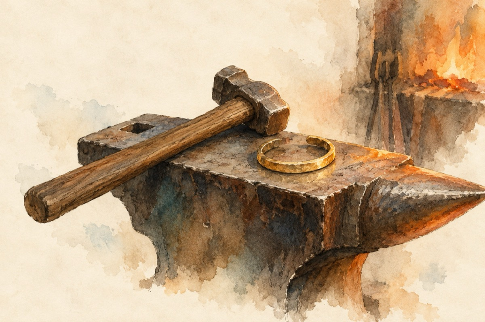

Sunt țigan
Soarele și luna au strălucirea lor
Eu sunt țigan sadea și le ador
Am învățat de la lună, sfeșnic bun
De-aceea cânt și joc ca un nebun!
Asta-i viața de țigan
Zi de zi și an de an
Cânt mereu și beau mereu
Ăsta e sufletul meu!
Da sunt țigan ,,haoleo mâncați-aș!”
Sunt peste tot și-n sate și-n oraș
Da, sunt țigan, am șatra mea, țiganca mea
Și aur cât doresc s-o-mbrac pe ea!
Sunt țigan din mahala
Toată ziua cânt și joc
Asta este viața mea
Nu mă-ndepărtez de foc!
Sunt țigan și mă mândresc
Am casă mare un palat, în cort eu locuiesc!
Bat nicovala cu-n ciocan și aur modelez
Am tot ce-mi trebuie și bulibașă mă visez!
Sunt țigan din țigănie
Iar țigăncile mă știe
Bat fierul pe nicovală
Peste mine dau năvală!
Sunt țigan c-așa ni-i neamul
De ne-adună cu toptanul
Dar suntem plini de talent
Demonstrăm la orice eveniment!
Sunt țigan cu mustăcioară
Și cu talie de zmeu
Ele după mine se omoară
Ăsta e talentul meu!
Sunt țigan, hei măi române
Sunt ca un frate cu tine
Da, eu am mândria mea
Cum o ai și tu pe-a ta
Și cu toți conviețuim
Că-n țara noastră trăim!
Sunt țigan din țigănie
Fierbe sângele în mine
Cum fierbe oala pe foc
Când țigăncile le joc!...
La, la, la, la, la, la
La, la, la, la, la, la
La, la, la, la, la, la
La, la, la, la, la, la
Vasile Groza